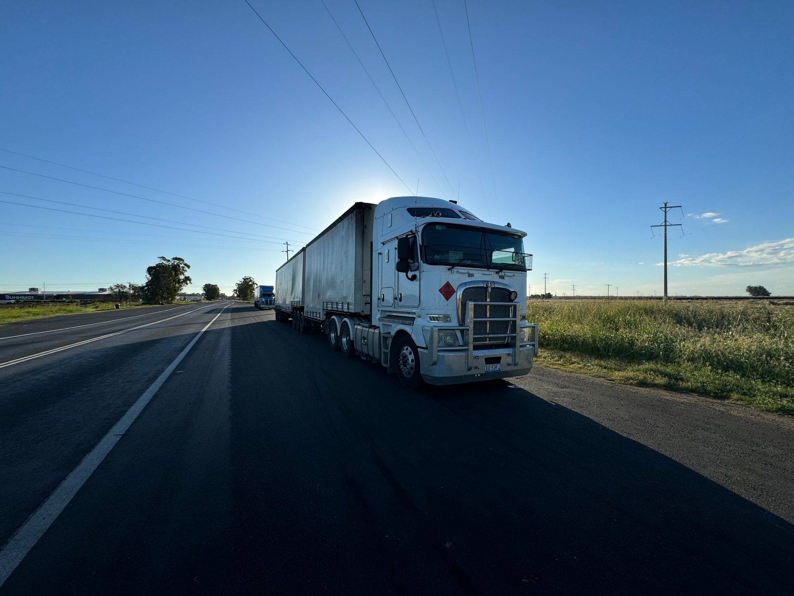

一般貨物運送事業
箱車・ウイング車で、一般貨物の集荷・配送に対応します。荷物の量や性質に合わせて車両を選定し、安全・確実にお届けします。

神奈川県 一般貨物運送 / 精密機器輸送
一般貨物の運送を中心に、神奈川県内を拠点としてお客様の大切な荷物を運びます。
箱車・ウイング車で、一般貨物の集荷・配送に対応します。荷物の量や性質に合わせて車両を選定し、安全・確実にお届けします。
精密機器の運搬から現場への搬入・搬出まで対応します。エアサスペンション搭載のウイング車で、丁寧な取り扱いを徹底します。
自社で運べるものは自社で責任を持って運び、車両や日程が合わない案件は信頼できる協力会社と連携して対応します。まずはご相談ください。
事業活動で出たリユース可能な廃棄物などの収集運搬について、許可を準備中です。取得でき次第対応いたします。
実際の業務フローを確認してから差し替えます。
| 会社名 | 関東大興運輸株式会社 |
|---|---|
| 代表者 | 代表取締役 神田 大輔 |
| 所在地 | 神奈川県〇〇市〇〇 0-0-0 |
| 設立 | 20XX年X月 |
| 資本金 | X,000万円 |
| 従業員数 | XX名（うちドライバー XX名） |
| 保有車両 | エアサス付きウイング車（4t・パワーゲート付きワイド）2台／大型車（10t）2台／キャラバン 1台（計5台） |
| 許可・登録 |
一般貨物自動車運送事業許可 準備中 産業廃棄物収集運搬業許可（神奈川県） 準備中 |
| 対応エリア | 神奈川県 |
| 電話 | 046-239-4130 |
| FAX | 046-239-4131 |
| メール | info@kantodaikouunyu.co.jp |
見積りは無料です。運びたいものと場所、希望の時期をお知らせいただければ、当日〜翌営業日中に概算をご案内します。
FAX：046-239-4131